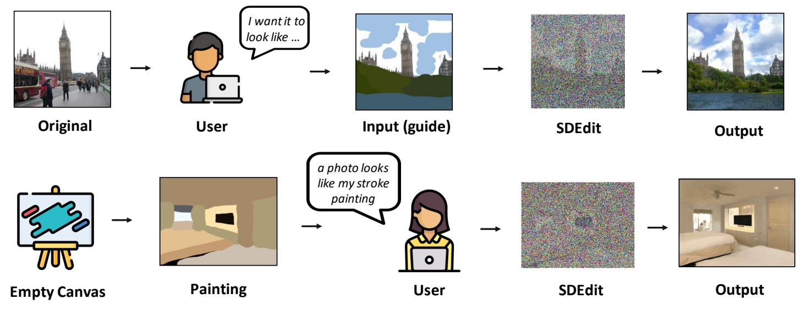
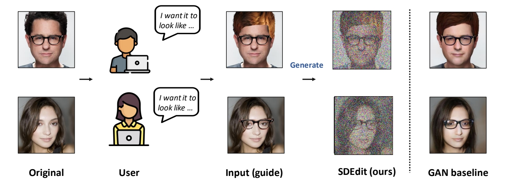

SDEdit: Guided Image Synthesis and Editing with Stochastic Differential Equations
1. 研究背景与核心问题

传统的图像合成与编辑方法（如GANs）需要针对特定任务设计复杂的损失函数或进行模型微调，难以在生成图像的**真实性（Realism）和与输入的一致性（Faithfulness）之间实现平衡。SDEdit提出了一种无需额外训练的统一框架，通过随机微分方程（SDE）**的逆向过程实现图像生成与编辑。
2. 核心方法：SDE驱动的生成与编辑
（1）前向与逆向SDE过程
- 前向加噪：输入图像通过SDE逐步添加噪声，破坏局部伪影但保留全局结构。例如，对用户绘制的粗糙笔画（如线条或色块）加噪，使其分布接近高斯噪声。
- 逆向去噪：从加噪后的中间状态出发，通过逆向SDE生成高质量图像。逆向过程利用预训练的**得分函数（Score Function）**预测噪声方向，逐步去除噪声。
（2）噪声调度与时间步选择
- 噪声调度函数：定义了噪声强度随时间的演化。论文对比了两种SDE：
- VE-SDE（方差爆炸型）：噪声方差随时间指数增长，最终分布接近高斯噪声。
- VP-SDE（方差保持型）：噪声方差与信号能量互补，确保总能量守恒。
- 关键参数t₀：控制加噪程度。t₀越大（如t₀∈[0.3, 0.6]），生成图像越真实但可能偏离输入；t₀越小则更忠实于输入但可能保留伪影。
（3）局部编辑与掩码融合
- 对于图像局部编辑（如修改特定区域），SDEdit通过掩码（Mask）分离编辑区域与未编辑区域：
- 编辑区域：按上述SDE流程处理；
- 未编辑区域：直接使用原图加噪后的中间状态，确保一致性。
Pipeline

Gradually projects the input to the manifold of natural images.
准备工作：一个预训练好的Image Diffusion Model
第一步：perturb the input with Gaussian noise
第二步：progressively remove the noise using a pretrained diffusion model.
3. 实验结果与优势
（1）生成质量与效率
- 任务支持：支持笔触生成图像（如草图转真实场景）、图像合成（如多图拼接）和局部编辑（如颜色调整）。
- 指标对比：在CelebA-HQ、LSUN等数据集上，SDEdit在KID（衡量真实性）和L2距离（衡量一致性）上优于传统方法（如GANs和级联模型）。
（2）无需训练的灵活性
- 直接利用预训练的扩散模型（如DDPM）作为得分函数，无需任务特定微调，显著降低应用门槛。
（3）与后续工作的关联
- Stable Diffusion的img2img功能：SDEdit的思想被整合至Stable Diffusion，支持基于噪声引导的图像到图像转换。
- 插值任务改进：NoiseDiffusion通过结合SDEdit的加噪策略，改善了自然图像插值的平滑性与质量。
4. 局限性及后续发展
（1）主要局限
- 缺乏文本引导能力：SDEdit本身不支持文本条件控制，需结合其他模型（如GLIDE）实现多模态生成。
- 计算成本：逆向SDE需多步迭代，实时性受限（后续工作如DDIM加速采样可缓解）。
（2）后续改进
- ControlNet++：引入像素级循环一致性损失，结合SDEdit的加噪策略提升可控性。
- 视频生成扩展：Sora等视频模型借鉴了SDEdit的时空块表示与噪声调度思想，实现连贯视频生成。
- 效率提升：全图生成速度比较慢，因此针对被编辑区域进行部分生成。

Li et al., "Efficient Spatially Sparse Inference for Conditional GANs and Diffusion Models", NeurIPS 2022
5. 应用场景与影响

- 艺术创作：将手绘草图转化为高质量图像，辅助设计师快速迭代。
- 图像修复：通过局部加噪-去噪消除遮挡或修复损坏区域。
- 工业设计：支持基于线稿的产品原型生成，结合物理仿真优化设计。
- Image compositing：把上面图的指定pixel patches应用到下面图上。SDEdit的结果更合理且与原图更像。

总结
SDEdit通过SDE框架统一了图像生成与编辑任务，以无需训练和灵活控制的特点成为扩散模型应用的重要里程碑。其核心思想被后续工作（如Stable Diffusion、ControlNet++）广泛采纳，推动了多模态生成与高分辨率合成技术的发展。